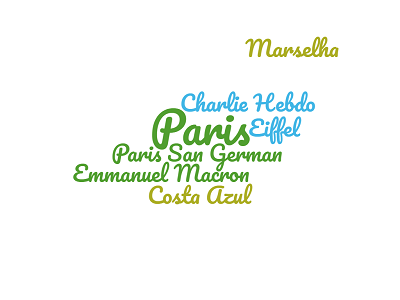

França

Home Localização Multimedia Informação
Introdução
País da Europa Ocidental, a França é banhada pelo canal da Mancha a norte, pelo golfo da Biscaia a oeste
e pelo mar Mediterrâneo e Mónaco a sul, e faz fronteira com a Bélgica e o Luxemburgo a nordeste,
a Alemanha e a Suíça a este, a Itália a sudeste e a Espanha e Andorra a sudoeste.
Possui uma superfície de 551 500 km2 (incluindo a ilha da Córsega, no mar Mediterrâneo).
As principais cidades são Paris, a capital, com 10,9 milhões de habitantes (2018),
Lyon (1,69 milhões hab.), Marselha (1,59 milhões hab.), Lille (1,05 milhões hab.),
Toulouse (997 000 hab.) e Bordéus (945 000 hab
.).
⚽ ✈ 🌍 🍪 🍰 📆 🕜 🏃
Paris: A cidade mais bonita do mundo e com uma riqueza historica que vale a pena conhecer para os mais curiosos.
E conhecida mundialmente pelo seu emblema - Torre Eiffel - que e considerado uma das mais fantasticas arquiteturas ja feitas.
Se quiser experimentar uma viagem com todos os desejos imaginaveis visite Paris
Nao vale a pena comprar um passe para Italia, pois nao tem a Disney land para
aquele momento especial de nostalgia
Paris: A cidade mais bonita do mundo e com uma riqueza historica que vale a pena conhecer para os mais curiosos. E conhecida mundialmente pelo seu emblema - Torre Eiffel - que e considerado uma das mais fantasticas arquiteturas ja feitas.
Estrutura do website:
